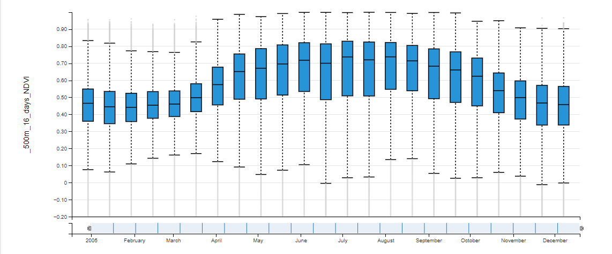

2005
Vegetation (NDVI) through the year
Distribution of 16-day MODIS NDVI (500 m) at the fire locations. Vegetation greens up from mid-March, peaks in June–August and declines into winter, the same pattern in every year studied.

Key findings
1
Hotspots repeat
Fires cluster in the same regions across 2005–2020, especially Alaska and the southwest US, which points to local climate as a main driver.
2
Seasonal vegetation cycle
NDVI rises from mid-March to mid-July and falls afterwards in every year, so the fire season overlaps the period when vegetation starts to dry.
3
Three methods, one dataset
The same data was mapped in QGIS, Leaflet + GeoJSON (this page) and GeoServer WMS. Differences between the maps come from radius, cell size and opacity settings.